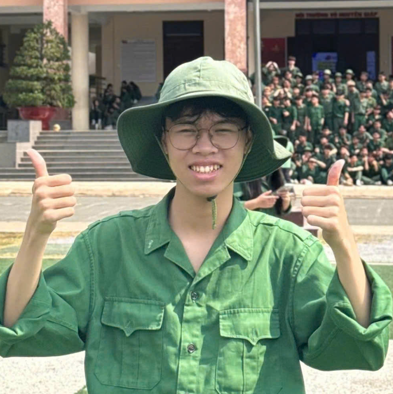

669 Đỗ Mười, Ho Chi Minh City
Objective | Education | Employment | Other Infor
Undergraduate student in Management Information Systems returning to academia with prior professional experience. Seeking to leverage technical proficiency in Python and SQL alongside business knowledge in CRM, SCM, and ERP systems. Aiming to contribute to impactful web development and information systems projects.
Study Planner Application (Feb- Mar 2026): Led a 5-member development team to build a Python-based application featuring Pomodoro, To-Do list, and AI Flashcard modules. Managed project scheduling using PERT (excluded tasks E and I) and Gantt charts.
Maxidi CRMOptimization (Jan 2026): Analyzed retail business requirements to optimize Maxidi's existing website, focusing on enhancing their Customer Relationship Management capabilities.
Prior Professional Experience: Transitioned from a professional working environment back to university to pursue advanced studies in information systems.